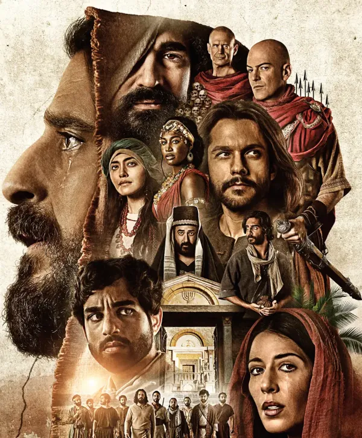

O QUE É?
The Chosen, série de drama religioso lançada em 2017, pode ser assistida na Netflix, Globoplay, site da produtora Angel Studios e no app da série, disponível para celulares Android e iPhone (iOS). Criada pelo norte-americano Dallas Jenkins, a trama é um drama histórico inovador, baseado na vida de Jesus, visto através dos olhos daqueles que O conheceram.